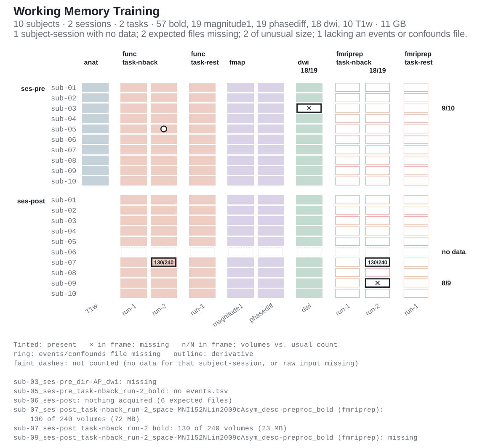
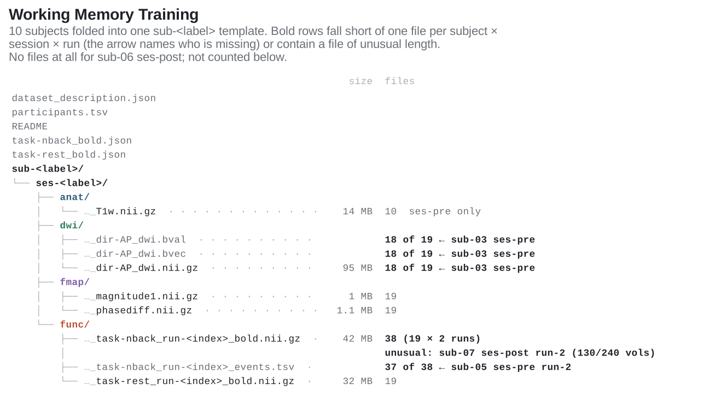
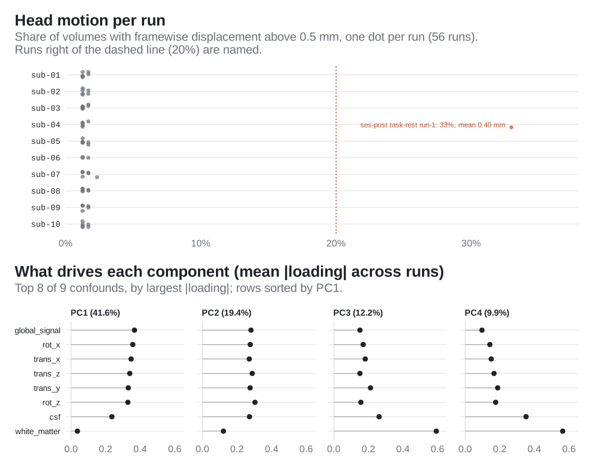

bidser reads a BIDS (Brain Imaging Data Structure) dataset into R and answers the questions that come before any analysis:
- what is in the dataset, and is anything missing or malformed;
- where the files for a given subject, session, task and run are;
- what the sidecar metadata say, with BIDS inheritance applied;
- which derivative pipelines (fMRIPrep and others) have run, and on what;
- which confound regressors to use, and whether head motion is a problem.
It works on the directory as it sits on disk, with no Python, external validator or imaging package required.
Documentation · Getting started · Derivatives · Confounds and variables · Mock projects · Reference · Changelog
Installation
install.packages("bidser") # CRAN release
remotes::install_github("bbuchsbaum/bidser") # development versionOpen a dataset
Point bids_project() at the dataset root. derivatives = "auto" also picks up any pipelines under derivatives/.
library(bidser)
proj <- bids_project(path, derivatives = "auto")
proj
#> <bids_project> Working Memory Training
#> root /tmp/Rtmp7eD2dP/wm-training
#> subjects 10 (from participants.tsv)
#> sessions pre, post
#> tasks nback, rest
#> datatypes anat, func, fmap, dwi
#> derivatives fmriprep (derivatives/fmriprep)The examples on this page run on a small demonstration dataset: a two-session working-memory study with 10 subjects, anat, func, fmap and dwi data, and fMRIPrep output. It is written by data-raw/readme-dataset.R and has a few planted problems so the checks below have something to find. Any BIDS directory works the same way, and get_example_bids_dataset("ds001") downloads a real one.
See what is there, and what is not
plot_bids() draws one row per subject (grouped by session) and one column per acquisition (grouped by datatype, task and pipeline). Files that are present are drawn pale, so the dark marks are the problems. A cross marks a missing file. A framed fraction marks a run with fewer volumes than its column usually has, read from the NIfTI header. A ring marks a run without its events.tsv. Every problem is listed under the plot by BIDS file name.
plot_bids(proj, interactive = FALSE)
plot_bids_tree() shows the same dataset as a file layout. Every subject is folded into one sub-<label> template, and each file line gives its count and names whoever is missing. Here it shows the raw data only, with the sub-<label>_ses-<label>_ prefix that every file name repeats abbreviated; by default it also draws each pipeline under derivatives/.
plot_bids_tree(proj, include_derivatives = FALSE, short_names = TRUE)
For the same checks as data rather than pictures, see bids_report(), bids_summary() and bids_check_compliance().
Find files by entity
query_files() filters on any BIDS entity and can return a tibble of parsed entities instead of paths. Filters are regular expressions by default; match_mode = "exact" and "glob" are also available.
query_files(proj, regex = "bold\\.nii\\.gz$", subid = "01", task = "nback",
scope = "raw", return = "tibble")[, c("subid", "session", "task", "run", "kind")]
#> # A tibble: 4 × 5
#> subid session task run kind
#> <chr> <chr> <chr> <chr> <chr>
#> 1 01 post nback 1 bold
#> 2 01 post nback 2 bold
#> 3 01 pre nback 1 bold
#> 4 01 pre nback 2 boldConvenience wrappers cover the common cases: func_scans(), event_files(), preproc_scans(), confound_files(), mask_files().
Metadata, volumes and events
get_metadata() resolves a file’s sidecar with BIDS inheritance, so a RepetitionTime set once in task-nback_bold.json at the dataset root applies to every run:
bold <- func_scans(proj, subid = "01", task = "nback", session = "pre", run = "1")
str(get_metadata(proj, bold)[c("TaskName", "RepetitionTime")])
#> List of 2
#> $ TaskName : chr "nback"
#> $ RepetitionTime: int 2n_volumes() reads volume counts from the image headers. Here it shows the run that stopped early:
n_volumes(proj, subid = "07", session = "post", task = "nback", as_tibble = TRUE)[
, c("subid", "session", "run", "nvols")]
#> # A tibble: 2 × 4
#> subid session run nvols
#> <chr> <chr> <int> <int>
#> 1 07 post 1 240
#> 2 07 post 2 130read_events() reads every matching events.tsv, one row per run with the events nested in data:
events <- read_events(proj, subid = "01", session = "pre", task = "nback")
nrow(events)
#> [1] 2
head(events$data[[1]][, c("onset", "duration", "trial_type", "response_time")], 4)
#> # A tibble: 4 × 4
#> onset duration trial_type response_time
#> <dbl> <dbl> <chr> <dbl>
#> 1 10 20 0back 0.652
#> 2 40 20 2back 0.808
#> 3 70 20 0back 0.839
#> 4 100 20 2back 0.819Derivatives
Pipelines under derivatives/ are discovered from their dataset_description.json, and every query can be scoped to raw data, to derivatives, or to one pipeline:
derivative_pipelines(proj)[, c("pipeline", "root")]
#> # A tibble: 1 × 2
#> pipeline root
#> <chr> <chr>
#> 1 fmriprep derivatives/fmriprep
preproc <- query_files(proj, regex = "desc-preproc_bold", scope = "derivatives",
pipeline = "fmriprep", subid = "09", session = "post")
basename(preproc)
#> [1] "sub-09_ses-post_task-nback_run-1_space-MNI152NLin2009cAsym_desc-preproc_bold.nii.gz"
#> [2] "sub-09_ses-post_task-rest_run-1_space-MNI152NLin2009cAsym_desc-preproc_bold.nii.gz"Only two preprocessed runs are returned for sub-09 ses-post, where three were expected. That is the failed run marked in the matrix above.
Confounds and head motion
read_confounds() reads fMRIPrep confound tables, selecting columns by named sets that adapt to the fMRIPrep version (confound_set("motion24"), "36p", "acompcor", …) or reducing them with a PCA strategy:
read_confounds(proj, subid = "01", session = "pre", cvars = confound_set("motion6"))
#> # A tibble: 3 × 5
#> # Groups: participant_id, task, run, session [3]
#> participant_id task run session data
#> <chr> <chr> <chr> <chr> <list>
#> 1 01 nback 1 pre <tibble [240 × 6]>
#> 2 01 nback 2 pre <tibble [240 × 6]>
#> 3 01 rest 1 pre <tibble [180 × 6]>Keep framewise displacement as a raw column and plot() leads with head motion. Each dot is one run, placed by the share of its volumes above the threshold (0.5 mm by default):
strategy <- confound_strategy(
pca_vars = c("global_signal", "csf", "white_matter", "trans_*", "rot_*"),
raw_vars = "framewise_displacement",
npcs = 4
)
plot(read_confounds(proj, cvars = strategy), view = "aggregate")
list_confound_sets() and list_confound_strategies() list the built-in options. Code that used the unexported bidser:::DEFAULT_CVARS2 should switch to confound_set("legacy_default"), which returns the same 26 columns.
Testing code without data
create_mock_bids() builds an in-memory project from a table of files. It can optionally write zero-byte stubs (plus event and confound tables) to disk. The query, event, confound and plotting functions accept it, so analysis code can be tested without downloading anything:
mock <- create_mock_bids(
project_name = "demo",
participants = c("01", "02"),
file_structure = data.frame(
subid = c("01", "02"), datatype = "func", task = "rest", run = "01",
suffix = "bold.nii.gz", fmriprep = FALSE
)
)
func_scans(mock)
#> [1] "demo/sub-01/func/sub-01_task-rest_run-01_bold.nii.gz"
#> [2] "demo/sub-02/func/sub-02_task-rest_run-01_bold.nii.gz"Learn more
- Getting started: querying a real dataset (ds001) end to end.
- Derivatives: pipeline discovery, scoped queries, run-level readiness checks.
- Confounds and variables: confound sets, PCA strategies, events and the per-run variables table.
- Mock projects: building test fixtures and archives.